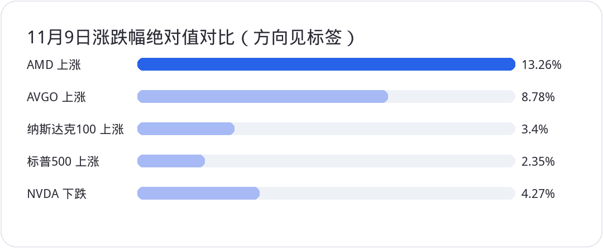

<div style="margin:0;padding:0;background:#f5f7fa;color:#2a2a34;font-size:16px;line-height:1.9;font-family:-apple-system,BlinkMacSystemFont,'SF Pro Text','PingFang SC','Hiragino Sans GB','Microsoft YaHei',Arial,sans-serif;font-variant-numeric:tabular-nums;font-feature-settings:'tnum' 1,'lnum' 1;text-align:left !important;text-align-last:left;letter-spacing:0;word-spacing:normal;white-space:normal;word-break:normal;box-sizing:border-box;"><div style="margin:0;background:#ffffff;padding:28px 22px 44px 22px;box-sizing:border-box;text-align:left !important;text-align-last:left;letter-spacing:0;word-spacing:normal;white-space:normal;word-break:normal;"><p style="display:block;width:100%;margin:0 0 12px 0;padding:0;color:#2763e9;font-size:10px;line-height:1.6;font-weight:650;letter-spacing:0.12em;text-align:center !important;text-align-last:center;word-spacing:normal;white-space:normal;word-break:normal;box-sizing:border-box;">美股 · 期权 · 资讯 · 观点</p><div style="margin:0 0 30px 0;padding:0;text-align:center !important;text-align-last:center;word-spacing:normal;white-space:normal;word-break:normal;box-sizing:border-box;"></div><div style="margin:0 0 0 0;padding:28px 0 0 0;text-align:left !important;text-align-last:left;letter-spacing:0;word-spacing:normal;white-space:normal;word-break:normal;box-sizing:border-box;"><div style="margin:0 0 12px 0;padding:0;text-align:left !important;line-height:1.2;border:0;display:flex;align-items:center;gap:10px;text-align-last:left;letter-spacing:0;word-spacing:normal;white-space:normal;word-break:normal;box-sizing:border-box;"><span style="display:inline-block;flex:0 0 auto;vertical-align:middle;color:#2763e9;font-size:12px;font-weight:850;letter-spacing:0.12em;line-height:1.2;text-transform:uppercase;border:0;box-sizing:border-box;">0 · MOMENTUM</span><span style="display:block;flex:1 1 auto;min-width:36px;vertical-align:middle;height:1px;margin:0 0 2px 0;background:#2763e9;line-height:1px;font-size:0;border:0;box-sizing:border-box;"></span></div><p style="margin:0 0 16px 0;padding:0;color:#2a2a34;font-size:22px;line-height:1.45;font-weight:850;text-align:left !important;letter-spacing:0;text-align-last:left;word-spacing:normal;white-space:normal;word-break:normal;box-sizing:border-box;">大盘迎来强反弹，英伟达却成了少数逆行者</p><p style="margin:0 0 16px 0;padding:0;color:#454550;font-size:16px;line-height:1.9;font-weight:400;text-align:left !important;letter-spacing:0;word-spacing:normal;white-space:normal;word-break:normal;text-align-last:left;box-sizing:border-box;">11月9日美股出现一场有广度的反弹。美联社收盘数据显示，<strong style="color:#2a2a34;font-weight:700;box-sizing:border-box;">SPY</strong>跟踪的标普500上涨2.35%，收在7549.94点；纳斯达克综合指数上涨2.74%，道指上涨2.15%，罗素2000上涨约3.15%。纳斯达克100涨约3.40%，收在27907.63点。布伦特原油回落约6%，VIX从上周五约25.64降至19.92。石油缓和了通胀担忧，也给了上周急剧去风险的投资者一个重新评估仓位的窗口。</p><p style="margin:0 0 16px 0;padding:0;color:#454550;font-size:16px;line-height:1.9;font-weight:400;text-align:left !important;letter-spacing:0;word-spacing:normal;white-space:normal;word-break:normal;text-align-last:left;box-sizing:border-box;">但没有什么比半导体内部的分化更值得琢磨。<strong style="color:#2a2a34;font-weight:700;box-sizing:border-box;">AMD</strong>收涨13.26%，<strong style="color:#2a2a34;font-weight:700;box-sizing:border-box;">AVGO</strong>涨约8.78%，<strong style="color:#2a2a34;font-weight:700;box-sizing:border-box;">NVDA</strong>却跌4.27%，收于178.67美元，单日市值蒸发约1900亿美元。同样属于AI算力供应链，市场并没有给予同一方向的定价。</p><p style="margin:4px 0 16px 0;padding:0;text-align:center !important;text-align-last:center;word-spacing:normal;white-space:normal;word-break:normal;box-sizing:border-box;"></p><p style="margin:0 0 16px 0;padding:0;color:#454550;font-size:16px;line-height:1.9;font-weight:400;text-align:left !important;letter-spacing:0;word-spacing:normal;white-space:normal;word-break:normal;text-align-last:left;box-sizing:border-box;">这场反弹也没有自动抹掉上周的跌幅。11月6日标普收7376.86，周一虽收复7500，却仍低于11月4日的7688.62。<strong style="color:#2a2a34;font-weight:700;box-sizing:border-box;">QQQ</strong>跟踪的纳指100同样要继续验证上方卖压。一天的上涨说明恐慌缓解，却无法由此断言大资金已全面翻多。尤其在个别超级权重股逆市走弱时，指数的上涨与自己的持仓收益可以完全是两回事。</p></div><div style="margin:30px 0 0 0;padding:28px 0 0 0;text-align:left !important;text-align-last:left;letter-spacing:0;word-spacing:normal;white-space:normal;word-break:normal;box-sizing:border-box;"><div style="margin:0 0 12px 0;padding:0;text-align:left !important;line-height:1.2;border:0;display:flex;align-items:center;gap:10px;text-align-last:left;letter-spacing:0;word-spacing:normal;white-space:normal;word-break:normal;box-sizing:border-box;"><span style="display:inline-block;flex:0 0 auto;vertical-align:middle;color:#2763e9;font-size:12px;font-weight:850;letter-spacing:0.12em;line-height:1.2;text-transform:uppercase;border:0;box-sizing:border-box;">1 · RISK</span><span style="display:block;flex:1 1 auto;min-width:36px;vertical-align:middle;height:1px;margin:0 0 2px 0;background:#2763e9;line-height:1px;font-size:0;border:0;box-sizing:border-box;"></span></div><p style="margin:0 0 16px 0;padding:0;color:#2a2a34;font-size:22px;line-height:1.45;font-weight:850;text-align:left !important;letter-spacing:0;text-align-last:left;word-spacing:normal;white-space:normal;word-break:normal;box-sizing:border-box;">黄仁勋承认不忠，英伟达风险究竟落在哪里</p><p style="margin:0 0 16px 0;padding:0;color:#454550;font-size:16px;line-height:1.9;font-weight:400;text-align:left !important;letter-spacing:0;word-spacing:normal;white-space:normal;word-break:normal;text-align-last:left;box-sizing:border-box;"><strong style="color:#2a2a34;font-weight:700;box-sizing:border-box;">NVDA</strong>的事情已进入正式治理程序。11月8日英伟达公开黄仁勋发给员工的信，他承认曾对妻子不忠并道歉。董事会同日宣布成立由独立董事及外部律师参与的调查，核查近期报道所称他可能受到外国情报活动针对的情况。董事会同时明确表示，目前没有理由相信国家安全或英伟达商业机密已经受损，并重申对黄仁勋及领导团队的信心。</p><p style="margin:0 0 16px 0;padding:0;color:#454550;font-size:16px;line-height:1.9;font-weight:400;text-align:left !important;letter-spacing:0;word-spacing:normal;white-space:normal;word-break:normal;text-align-last:left;box-sizing:border-box;">这几件事不能混为一谈。对婚姻不忠的承认是公司公开的事实，关于关联人士涉及外国情报活动、芯片流向和违法行为的指控则还没有得到独立调查结论。11月9日收盘后，股东又提起拟议集体诉讼，指控公司相关披露不足。诉讼存在不等于诉讼主张成立，也不能把盘后才提交的诉讼当成解释当天全部跌幅的先行因素。</p><p style="margin:0 0 16px 0;padding:0;color:#454550;font-size:16px;line-height:1.9;font-weight:400;text-align:left !important;letter-spacing:0;word-spacing:normal;white-space:normal;word-break:normal;text-align-last:left;box-sizing:border-box;">短期真正伤害股价的，是三层不确定性。第一层是公司治理折价：创始人兼CEO身处调查，机构很难像过去那样简单给个人领导力溢价。第二层是合规与客户关系：如果后续出现出口许可或商业机密方面的实质问题，调查影响才可能传导到订单、成本或海外销售。第三层是关键人物风险：董事会目前支持其留任，但若出现重大新证据而改变安排，短期估值会承受额外冲击。反过来，如果调查未发现公司违规、黄仁勋继续领导，而数据中心订单及毛利率照常兑现，这类折价就可能逐步修复。</p><p style="margin:0 0 16px 0;padding:0;color:#454550;font-size:16px;line-height:1.9;font-weight:400;text-align:left !important;letter-spacing:0;word-spacing:normal;white-space:normal;word-break:normal;text-align-last:left;box-sizing:border-box;">11月9日股价开在173美元附近，盘中最低实为170.24美元，最后收回178.67美元。<strong style="color:#2a2a34;font-weight:700;box-sizing:border-box;">174美元盘中已跌破，收盘却重新站上</strong>，不能既说“174从未破位”，也不能直接写成“收盘确认失守”。这解释了两种截然不同的交易纪律：把日内触发作为减仓条件的人可以执行；等收盘确认、并愿意承受隔夜波动的人未必做出同样选择。不同交易体系不能互相拿来证明谁对谁错。</p><p style="margin:0 0 16px 0;padding:0;color:#454550;font-size:16px;line-height:1.9;font-weight:400;text-align:left !important;letter-spacing:0;word-spacing:normal;white-space:normal;word-break:normal;text-align-last:left;box-sizing:border-box;">后续先看170.24美元当日低点能否守住，再看174至194美元区间能否稳定收复，尤其194美元上方是否有持续量价确认。若跌破170并反复收不回，150至160美元可以作为重新评估风险的较低观察区，但不是必然到达的目标。对于核心持仓，与其猜黄仁勋一定离职或绝不离职，不如分别预设调查无实质问题、调查延长和出现重大合规发现时的仓位上限。公司已确认11月17日公布2027财年第三季度业绩，那才是需求、毛利率与治理风险会同场接受检验的时间点。</p></div><div style="margin:30px 0 0 0;padding:28px 0 0 0;text-align:left !important;text-align-last:left;letter-spacing:0;word-spacing:normal;white-space:normal;word-break:normal;box-sizing:border-box;"><div style="margin:0 0 12px 0;padding:0;text-align:left !important;line-height:1.2;border:0;display:flex;align-items:center;gap:10px;text-align-last:left;letter-spacing:0;word-spacing:normal;white-space:normal;word-break:normal;box-sizing:border-box;"><span style="display:inline-block;flex:0 0 auto;vertical-align:middle;color:#2763e9;font-size:12px;font-weight:850;letter-spacing:0.12em;line-height:1.2;text-transform:uppercase;border:0;box-sizing:border-box;">2 · MOMENTUM</span><span style="display:block;flex:1 1 auto;min-width:36px;vertical-align:middle;height:1px;margin:0 0 2px 0;background:#2763e9;line-height:1px;font-size:0;border:0;box-sizing:border-box;"></span></div><p style="margin:0 0 16px 0;padding:0;color:#2a2a34;font-size:22px;line-height:1.45;font-weight:850;text-align:left !important;letter-spacing:0;text-align-last:left;word-spacing:normal;white-space:normal;word-break:normal;box-sizing:border-box;">AMD涨13%不是只有替代效应，TSM反弹也要看确认</p><p style="margin:0 0 16px 0;padding:0;color:#454550;font-size:16px;line-height:1.9;font-weight:400;text-align:left !important;letter-spacing:0;word-spacing:normal;white-space:normal;word-break:normal;text-align-last:left;box-sizing:border-box;"><strong style="color:#2a2a34;font-weight:700;box-sizing:border-box;">AMD</strong>当天上涨13.26%至508.58美元，确实容易让人想到资金从<strong style="color:#2a2a34;font-weight:700;box-sizing:border-box;">NVDA</strong>切向竞争对手，但它本身也有明确催化。公司11月9日公告，第五代EPYC服务器CPU将用于Google Cloud TPU 8tx主机基础设施；Oppenheimer同日把评级上调至Outperform，目标价600美元。这里的产品是TPU系统的主机CPU，不能误写成AMD替代了谷歌的TPU加速器，也没有公开合同金额供市场直接折现。</p><p style="margin:0 0 16px 0;padding:0;color:#454550;font-size:16px;line-height:1.9;font-weight:400;text-align:left !important;letter-spacing:0;word-spacing:normal;white-space:normal;word-break:normal;text-align-last:left;box-sizing:border-box;">股价强势不代表财报现金流风险消失。AMD第三季度自由现金流只有5.54亿美元，低于第二季度的15.58亿美元；库存和应收账款显著增加。若四季度约170亿美元营收指引兑现，订单带来的存货与现金占用能否回落，才更能证明这不是单纯的估值反弹。技术上501至528美元可以作为反弹后的观察区，放量突破、回踩不破比单日涨13%更可靠；跌回501下方则要重新估计上攻持续性。</p><p style="margin:0 0 16px 0;padding:0;color:#454550;font-size:16px;line-height:1.9;font-weight:400;text-align:left !important;letter-spacing:0;word-spacing:normal;white-space:normal;word-break:normal;text-align-last:left;box-sizing:border-box;"><strong style="color:#2a2a34;font-weight:700;box-sizing:border-box;">TSM</strong>反弹接近390美元，靠近此前波动密集区。先进制程订单和定价权是基本面优势，短线也无法免疫整个半导体板块的融资预期变化。390附近先看是否遇阻，更上方424美元可作为强势趋势重新确认的参考；下行则观察360至378美元是否出现二次止跌。不要因为价格触及某个区间就机械建仓，行业需求、盈利预测和价格形态要能对得上。</p></div><div style="margin:30px 0 0 0;padding:28px 0 0 0;text-align:left !important;text-align-last:left;letter-spacing:0;word-spacing:normal;white-space:normal;word-break:normal;box-sizing:border-box;"><div style="margin:0 0 12px 0;padding:0;text-align:left !important;line-height:1.2;border:0;display:flex;align-items:center;gap:10px;text-align-last:left;letter-spacing:0;word-spacing:normal;white-space:normal;word-break:normal;box-sizing:border-box;"><span style="display:inline-block;flex:0 0 auto;vertical-align:middle;color:#2763e9;font-size:12px;font-weight:850;letter-spacing:0.12em;line-height:1.2;text-transform:uppercase;border:0;box-sizing:border-box;">3 · FOCUS</span><span style="display:block;flex:1 1 auto;min-width:36px;vertical-align:middle;height:1px;margin:0 0 2px 0;background:#2763e9;line-height:1px;font-size:0;border:0;box-sizing:border-box;"></span></div><p style="margin:0 0 16px 0;padding:0;color:#2a2a34;font-size:22px;line-height:1.45;font-weight:850;text-align:left !important;letter-spacing:0;text-align-last:left;word-spacing:normal;white-space:normal;word-break:normal;box-sizing:border-box;">CTA点位可能放大行情，却不是自动预测器</p><p style="margin:0 0 16px 0;padding:0;color:#454550;font-size:16px;line-height:1.9;font-weight:400;text-align:left !important;letter-spacing:0;word-spacing:normal;white-space:normal;word-break:normal;text-align-last:left;box-sizing:border-box;">标普周一恰好收在7549.94点，围绕7549点的多空争夺很容易成为交易口头禅。市场流传的量化CTA情景中，7676点上方可能触发追买，7084点下方可能触发更剧烈的卖盘；也有模型估算近周仍存在数百亿美元级别的被动减仓。需要提醒的是，这些是机构模型的条件估算，依赖持仓、波动率、历史价格和再平衡期限，缺少可公开复核的同一版本原始模型，不宜把“740亿美元必买”或“1495亿美元必卖”当成已挂单的确定交易。</p><p style="margin:0 0 16px 0;padding:0;color:#454550;font-size:16px;line-height:1.9;font-weight:400;text-align:left !important;letter-spacing:0;word-spacing:normal;white-space:normal;word-break:normal;text-align-last:left;box-sizing:border-box;">空头回补也不能等同于真正的基本面买盘。上周对冲基金去杠杆可能给周一反弹提供燃料，但仅凭指数单日大涨，还算不出回补、回购与新多头的准确比例。真正有用的是后续几天的验证：<strong style="color:#2a2a34;font-weight:700;box-sizing:border-box;">SPY</strong>对应的标普能否保持7549并向7676推进，涨幅能否继续扩散到更多成分股；<strong style="color:#2a2a34;font-weight:700;box-sizing:border-box;">QQQ</strong>能否收复687美元附近的短线压力，并逐步消化728美元之上的旧成交密集区。若指数重新跌回7549并且VIX再向25回升，追涨的盈亏比很快会恶化。</p><p style="margin:0 0 16px 0;padding:0;color:#454550;font-size:16px;line-height:1.9;font-weight:400;text-align:left !important;letter-spacing:0;word-spacing:normal;white-space:normal;word-break:normal;text-align-last:left;box-sizing:border-box;"><strong style="color:#2a2a34;font-weight:700;box-sizing:border-box;">SOXX</strong>已在11月5日起按1拆3调整份额交易，观察约128至134美元的整理与160至178美元的较高阻力时，一定要统一拆股后的价格口径。把拆股前的历史价与拆股后的现价直接连线，会平白造出一道不存在的暴跌。半导体内部资本结构差异正在变大，ETF反弹不等于所有机房债务和芯片库存风险同步消失。</p></div><div style="margin:30px 0 0 0;padding:28px 0 0 0;text-align:left !important;text-align-last:left;letter-spacing:0;word-spacing:normal;white-space:normal;word-break:normal;box-sizing:border-box;"><div style="margin:0 0 12px 0;padding:0;text-align:left !important;line-height:1.2;border:0;display:flex;align-items:center;gap:10px;text-align-last:left;letter-spacing:0;word-spacing:normal;white-space:normal;word-break:normal;box-sizing:border-box;"><span style="display:inline-block;flex:0 0 auto;vertical-align:middle;color:#2763e9;font-size:12px;font-weight:850;letter-spacing:0.12em;line-height:1.2;text-transform:uppercase;border:0;box-sizing:border-box;">4 · CAPEX</span><span style="display:block;flex:1 1 auto;min-width:36px;vertical-align:middle;height:1px;margin:0 0 2px 0;background:#2763e9;line-height:1px;font-size:0;border:0;box-sizing:border-box;"></span></div><p style="margin:0 0 16px 0;padding:0;color:#2a2a34;font-size:22px;line-height:1.45;font-weight:850;text-align:left !important;letter-spacing:0;text-align-last:left;word-spacing:normal;white-space:normal;word-break:normal;box-sizing:border-box;">CoreWeave与Anthropic，下一轮检验在现金流和发行价格</p><p style="margin:0 0 16px 0;padding:0;color:#454550;font-size:16px;line-height:1.9;font-weight:400;text-align:left !important;letter-spacing:0;word-spacing:normal;white-space:normal;word-break:normal;text-align-last:left;box-sizing:border-box;">11月10日周二美东下午5时，<strong style="color:#2a2a34;font-weight:700;box-sizing:border-box;">CRWV</strong>将召开第三季度业绩电话会。市场关心的不是单独一项收入增长，而是已签合同能否转成收入和现金、资本开支与融资成本是否相匹配、数据中心项目是否受到审批或供电延误。高负债的算力运营商在任何交付延期中都会更脆弱。期权市场常给财报前的股票较高的双向预期波动，但没有统一到期期限与期权报价，不能把“必涨跌20%”当成定论。若实际现金流好于担心、利差收窄，可能修复AI基建风险溢价；若现金消耗加快、融资受限，反弹就容易受挫。</p><p style="margin:0 0 16px 0;padding:0;color:#454550;font-size:16px;line-height:1.9;font-weight:400;text-align:left !important;letter-spacing:0;word-spacing:normal;white-space:normal;word-break:normal;text-align-last:left;box-sizing:border-box;">Anthropic的IPO安排也在推进，但尚不能宣布本周已完成定价。公司10月26日公开披露提交S-1，11月6日有媒体报道拟在本周展开机构路演；路透社11月10日报道，一份发给承销商的70至80美元初步定价资料随后被撤回并被明确指为不准确。真正有意义的是最终修订后的招股说明书、正式发行区间及机构订单，而不是网传估值和路演热度。一级市场若接受高估值，可能改善AI软件链条情绪；若发行降价或推迟，也不能直接推导GPU采购立即下降。</p><p style="margin:0 0 16px 0;padding:0;color:#454550;font-size:16px;line-height:1.9;font-weight:400;text-align:left !important;letter-spacing:0;word-spacing:normal;white-space:normal;word-break:normal;text-align-last:left;box-sizing:border-box;">11月10日还将公布10月CPI；11月17日是英伟达财报。未来几天最值得看的组合是：通胀是否允许长债稳住、<strong style="color:#2a2a34;font-weight:700;box-sizing:border-box;">CRWV</strong>能否交出可信的现金流、英伟达调查有无实质进展，以及半导体上涨是否不再绕开<strong style="color:#2a2a34;font-weight:700;box-sizing:border-box;">NVDA</strong>。如果这些条件改善，周一反弹才可能从空头回补走向更有韧性的上涨；反之，即使指数一时强势，也应先计算持仓集中度、卖出看跌期权的潜在接仓现金以及保护性put或collar的真实成本。<strong style="color:#2a2a34;font-weight:700;box-sizing:border-box;">市场可以很快忘掉一段绯闻，但不会永久忽略合规风险和现金流缺口。</strong></p></div><div style="margin:34px 0 0 0;padding:0;border:1px solid #e4e7ed;border-radius:24px;background:#fafbfc;text-align:center !important;box-sizing:border-box;overflow:hidden;text-align-last:center;word-spacing:normal;white-space:normal;word-break:normal;"><p style="margin:0;padding:18px 16px;color:#6a6a78;font-size:14px;line-height:1.8;text-align:center !important;background:#fafbfc;box-sizing:border-box;text-align-last:center;word-spacing:normal;white-space:normal;word-break:normal;">长按识别二维码关注公众号，持续获取每日美股资讯与观点。</p><p style="margin:0;text-align:center !important;background:#ffffff;box-sizing:border-box;text-align-last:center;word-spacing:normal;white-space:normal;word-break:normal;"></p></div><p style="margin:28px 0 0 0;padding:22px 0 0 0;color:#9a9aa8;font-size:12px;line-height:1.8;text-align:center !important;text-align-last:center;word-spacing:normal;white-space:normal;word-break:normal;box-sizing:border-box;">免责声明：本文仅为个人市场观察和交易复盘，不构成任何投资建议；市场有风险，交易需谨慎。点击阅读原文可跳转博客。</p></div></div>
